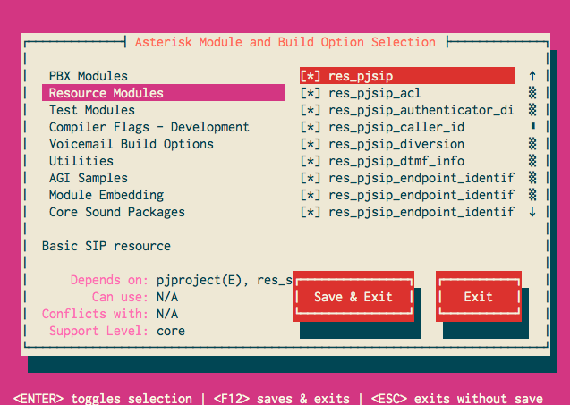

Overview
Asterisk 12 contains two SIP stacks: one, the original chan_sip SIP channel driver that has been present in all previous releases of Asterisk, and a new SIP stack that is based on pjproject. For background information on the decision to write a new SIP channel driver for Asterisk 12, please read the New SIP Channel Driver page.
Because the current release of pjproject cannot build shared object libraries, some changes were required in order to use it with Asterisk 12. As a result, the current versions of pjproject that can be downloaded from www.pjsip.org will not work with Asterisk 12.
The Asterisk 12 compatible version of pjproject is available on github, or - depending on your Linux distribution - available as a package. This wiki page provides detailed instructions on building and installing pjproject for Asterisk 12.
Building and Installing pjproject from Source
Downloading pjproject
If you do not have git, install git on your local machine.
Checkout the Asterisk 12-compatible pjproject from the Asterisk github repo:
# git clone https://github.com/asterisk/pjproject pjproject
And that's it!
Building and Installing pjproject
Change directories to the pjproject source directory:
# cd pjproject
In the pjproject source directory, run the configure script:
# ./configure --prefix=/usr --enable-shared --disable-sound --disable-resample --disable-video --disable-opencore-amr
pjproject embeds a number of third party libraries which can conflict with versions of those libraries that may already be installed on your system. Thus, building pjproject is highly dependent on your distribution of Linux as well as what third party libraries are already installed on your system. A number of configuration options are available to disable these libraries in pjproject and custom tailor it to your system. The table below outlines common ones that may be needed for a typical installation.
Library Configure option Notes libspeex shared objects --with-external-speexMake sure that the library development headers are accessible from pjproject. The CFLAGS and LDFLAGS environment variables may be used to set the include/lib paths. libsrtp shared objects --with-external-srtpMake sure that the library development headers are accessible from pjproject. The CFLAGS and LDFLAGS environment variables may be used to set the include/lib paths. GSM codec --with-external-gsmMake sure that the library development headers are accessible from pjproject. The CFLAGS and LDFLAGS environment variables may be used to set the include/lib paths. Disable sound --disable-soundLet Asterisk perform sound manipulations. Disable resampling --disable-resampleLet Asterisk perform resample operations.
Disable video --disable-videoDisable video support in pjproject's media libraries. This is not used by Asterisk. Disable AMR --disable-opencore-amr Disable AMR codec support. This is not used by Asterisk These are some of the more common options used to disable third party libraries in pjproject. However, other options may be needed depending on your system - see
configure --helpfor a full list of configure options you can pass to pjproject.Build pjproject:
# make dep # make
Install pjproject
# make install
Update shared library links.
# ldconfig
Verify that pjproject has been installed in the target location by looking for, and finding the various pjproject modules:
# ldconfig -p | grep pj libpjsua.so (libc6,x86-64) => /usr/lib/libpjsua.so libpjsip.so (libc6,x86-64) => /usr/lib/libpjsip.so libpjsip-ua.so (libc6,x86-64) => /usr/lib/libpjsip-ua.so libpjsip-simple.so (libc6,x86-64) => /usr/lib/libpjsip-simple.so libpjnath.so (libc6,x86-64) => /usr/lib/libpjnath.so libpjmedia.so (libc6,x86-64) => /usr/lib/libpjmedia.so libpjmedia-videodev.so (libc6,x86-64) => /usr/lib/libpjmedia-videodev.so libpjmedia-codec.so (libc6,x86-64) => /usr/lib/libpjmedia-codec.so libpjmedia-audiodev.so (libc6,x86-64) => /usr/lib/libpjmedia-audiodev.so libpjlib-util.so (libc6,x86-64) => /usr/lib/libpjlib-util.so libpj.so (libc6,x86-64) => /usr/lib/libpj.so
Finally, verify that Asterisk detects the pjproject libraries. In your Asterisk 12 source directory:
# ./configure # make menuselect
- Browse to the Resource Modules category and verify that the
res_pjsipmodules are enabled:
 - You're all done! Now, build and install Asterisk as your normally would.
Issues and Workarounds
Issue
After building and installing pjproject, Asterisk fails to detect any of the libraries - the various res_pjsip components cannot be selected in Asterisk's menuselect
Workaround
Verify that Asterisk's config.log shows the following:
configure:23029: checking for PJPROJECT configure:23036: $PKG_CONFIG --exists --print-errors "libpjproject" Package libpjproject was not found in the pkg-config search path. Perhaps you should add the directory containing `libpjproject.pc' to the PKG_CONFIG_PATH environment variable No package 'libpjproject' found
- Make sure you have
pkg-configinstalled on your system. - pjproject will install the package config file in
/usr/lib/pkgconfig. Some distributions, notably Fedora, will instead look for the library in/usr/lib64. Update yourPKG_CONFIG_PATHenvironment variable with/usr/lib/pkgconfigand re-run Asterisk'sconfigurescript.
Issue
When building pjproject, errors about opencore_amr are displayed, e.g.:
output/pjmedia-codec-x86_64-unknown-linux-gnu/opencore_amr.o:(.rodata+0x60): multiple definition of `pjmedia_codec_amrnb_framelenbits' output/pjmedia-codec-x86_64-unknown-linux-gnu/opencore_amr.o:(.rodata+0x60): first defined here output/pjmedia-codec-x86_64-unknown-linux-gnu/opencore_amr.o:(.rodata+0x80): multiple definition of `pjmedia_codec_amrnb_framelen' output/pjmedia-codec-x86_64-unknown-linux-gnu/opencore_amr.o:(.rodata+0x80): first defined here output/pjmedia-codec-x86_64-unknown-linux-gnu/opencore_amr.o:(.rodata+0x20): multiple definition of `pjmedia_codec_amrwb_framelenbits' output/pjmedia-codec-x86_64-unknown-linux-gnu/opencore_amr.o:(.rodata+0x20): first defined here output/pjmedia-codec-x86_64-unknown-linux-gnu/opencore_amr.o:(.rodata+0x40): multiple definition of `pjmedia_codec_amrwb_framelen' output/pjmedia-codec-x86_64-unknown-linux-gnu/opencore_amr.o:(.rodata+0x40): first defined here ...
Workaround
You already have the AMR codec installed. Run configure with the --disable-opencore-amr option specified.
Issue
When building pjproject, linker errors referring to various video methods are displayed, e.g.:
/home/mjordan/projects/pjproject/pjmedia/lib/libpjmedia-videodev.so: undefined reference to `pjmedia_format_init_video' /home/mjordan/projects/pjproject/pjmedia/lib/libpjmedia.so: undefined reference to `pjmedia_video_format_mgr_instance' /home/mjordan/projects/pjproject/pjmedia/lib/libpjmedia-videodev.so: undefined reference to `pjmedia_format_get_video_format_detail' /home/mjordan/projects/pjproject/pjmedia/lib/libpjmedia-videodev.so: undefined reference to `pjmedia_get_video_format_info'
Workaround
Run configure with either or both --disable-video or --disable-v4l2
Issue
After building pjproject, the dump provided by ldconfig -p doesn't display any libraries.
Workaround
Run ldconfig to re-configure dynamic linker run-time bindings
Uninstalling a Previous Version of pjproject
Typically, other versions of pjproject will be installed as static libraries. These libraries are not compatible with Asterisk and can confuse the build process for Asterisk 12. As such, any static libraries must be removed prior to installing the compatible version of pjproject.
pjproject provides an uninstall make target that will remove previous installations. It can be called from the pjproject source directory like:
# make uninstall
If you don't have an "uninstall" make target, you may need to fetch and merge the latest pjproject from https://github.com/asterisk/pjproject
Alternatively, the following should also remove all previously installed static libraries:
# rm -f /usr/lib/libpj*.a /usr/lib/libmilenage*.a /usr/lib/pkgconfig/libpjproject.pc
{kind=link}
{kind=link}
{kind=link}
{kind=link}
{kind=link}